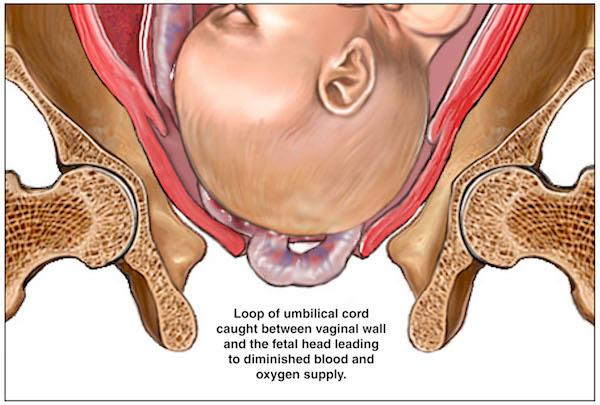

Two related obstetric emergencies: cord presentation (cord below the presenting part with intact membranes) and cord prolapse (cord below the presenting part after membrane rupture). This chapter covers definitions, 10 risk factors, diagnosis, and management (which depends on fetal state + cervical dilation + presentation).
Cord presentation and cord prolapse are related concepts that share the same underlying mechanism (umbilical cord descending below the fetal presenting part) but are distinguished by the state of the membranes.
Presence of the umbilical cord below the fetal presenting part which can be felt through an intact membranes.
Presence of coils of the umbilical cord below the presenting part after rupture of the membranes.
Both terms describe the same anatomic finding (cord below the presenting part), but cord presentation is the term used before the membranes rupture, and cord prolapse is the term used after they rupture. The reason is clinical urgency: with intact membranes, the cord is still protected by the fluid cushion and is not at immediate risk of compression; once the membranes rupture, the cord can prolapse into the vagina and be compressed against the presenting part — a true obstetric emergency.

Cord prolapse has a perinatal mortality of ~10-20% if delivery is delayed more than 30 minutes, but can drop to <5% with rapid delivery (typically <10 minutes from diagnosis). The danger is fetal hypoxia (oxygen deprivation) due to mechanical compression of the cord between the presenting part and the bony pelvis — exactly the scenario illustrated in Figure 1. Note: the source does not quote these specific percentages; they are added for clinical context, consistent with standard obstetric teaching.
The source lists 10 risk factors for cord prolapse. They fall into 3 conceptual groups: (a) anything that prevents the presenting part from engaging, (b) excessive cord length or low-lying cord, and (c) increased fluid volume or fetal size.
Smaller, lighter fetus does not engage well in the pelvis.
Structural anomaly may prevent normal engagement.
After 1st twin is delivered, the 2nd twin may be malpositioned before engagement.
Lax abdominal wall → less support for presenting part.
Smaller fetus has more room to slide past the presenting part.
Non-cephalic presentations have an ill-fitting presenting part → cord can slip past it.
Head cannot enter the pelvis → cord can descend past it.
Placenta near cervix leaves room for cord to descend; long cord is more likely to prolapse.
Excess amniotic fluid → sudden gush on membrane rupture can wash the cord out.
Large fetus with relatively small head may not engage fully.
A useful mnemonics clustering the 10 risk factors: Multiparity · Ill-fitting presentation (breech, oblique, transverse, unstable) · Prematurity · Second twin · Fetal abnormality · Big baby (macrosomia) · CPD (cephalopelvic disproportion) · Low-lying placenta / long cord · Polyhydramnios · Membrane rupture before engagement (implicit in all of the above). The unifying principle: anything that prevents the presenting part from fully occupying the pelvic inlet leaves a space through which the cord can descend.
An ill-fitting or non-engaged presenting part should alert one to the possibility of cord prolapse.
In cord prolapse, the cord can be seen protruding from the introitus or loops of cord can be palpated within the vaginal canal. If the cord is pulsating, the fetus is alive.
The pulsation of the prolapsed cord is the bedside sign of fetal viability: if the cord is pulsating, the fetus is alive (and the management is aggressive — immediate delivery). If the cord is not pulsating, the fetus is likely dead (and the management per §6 is "spontaneous delivery is allowed"). In a real clinical setting the cord pulsation correlates with the fetal heart rate, but is sometimes easier to assess at the introitus than via Pinard/CTG on the maternal abdomen.
Occult prolapses are rarely felt on pelvic examination and the only sign is fetal heart rate changes.
Color Doppler: loops of cord in front of the presenting part can be visualized.
Put the patient in knee chest position and prepare for emergency C.S.
The knee-chest position (patient on knees, chest resting on the bed, pelvis elevated above the chest) uses gravity to shift the fetal presenting part up and away from the cord, relieving compression on the umbilical cord. The same principle is achieved in Trendelenburg position (head down, feet up), but knee-chest is the more common teaching position because it can be maintained with the patient awake and cooperative. The position is a bridge maneuver — it does not deliver the baby, but it buys time to prepare for cesarean section by temporarily relieving cord compression.
Management of cord prolapse depends upon the fetal state:
→ Immediate cesarean section.
The cervix is not yet fully dilated, so vaginal delivery is not possible; CS is the only option.
The fetus should be delivered immediately by:
In all branches of "living fetus" management, the operative word is "immediate" — immediate CS if the cervix is not fully dilated, immediate forceps if the head is engaged and the cervix is fully dilated, immediate CS if the head is not engaged. The goal is delivery within minutes, not hours, to relieve cord compression and restore fetal oxygenation.
No operative intervention is needed; the mother is allowed to deliver vaginally in her own time.
The reason the algorithm branches on fetal state (alive vs dead) is the risk-benefit calculation changes drastically. For a living fetus, the cord compression is an active threat to a viable baby — emergency delivery is justified regardless of cervical status. For a dead fetus, the threat is gone — the mother can deliver spontaneously without any of the operative risks of emergency CS (hemorrhage, infection, anesthetic complications, future uterine rupture risk). This is the same risk-benefit logic that underlies the "CS even if the baby is dead" rule for neglected shoulder in Topic 27: the threshold is different, but the principle is the same — operate only when the maternal and fetal risk-benefit justifies it.
Illustrative diagrams of cord prolapse are requested from students' groups.
Why this activity matters: Note that the source itself has only one anatomical figure (the one in §3), and the activity explicitly asks students to draw their own diagrams. This is a deliberate pedagogical choice: the mechanism of cord prolapse is much easier to re-construct by drawing than to memorize by reading. The act of drawing forces you to think about 3D relationships (the cord, the presenting part, the pelvis, the membranes) that text alone cannot convey.
Suggested diagrams to draw (in order of complexity):
Please complete the self-assessment Google Form:
Google Form: https://forms.gle/4oPrBpX8Be2Fg6N66
What the form covers (typical chapter checks):
.src-viz card. It was extracted to extracted_images/28_cord_presentation_and_prolapse/cord_prolapse_anatomical_diagram.jpg for archival.https://forms.gle/4oPrBpX8Be2Fg6N66 (reproduced verbatim from source).